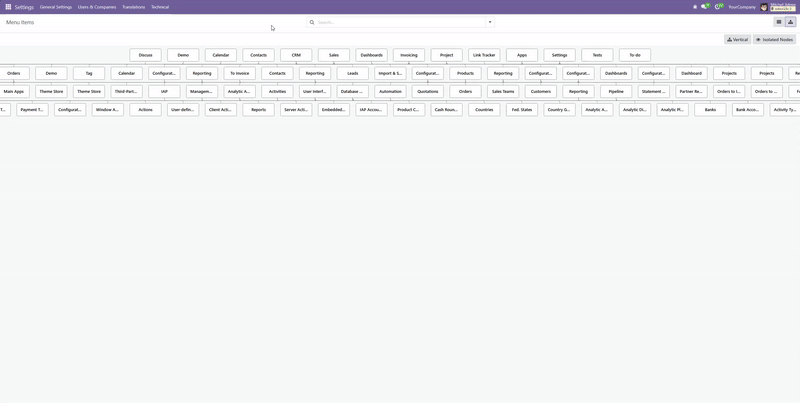
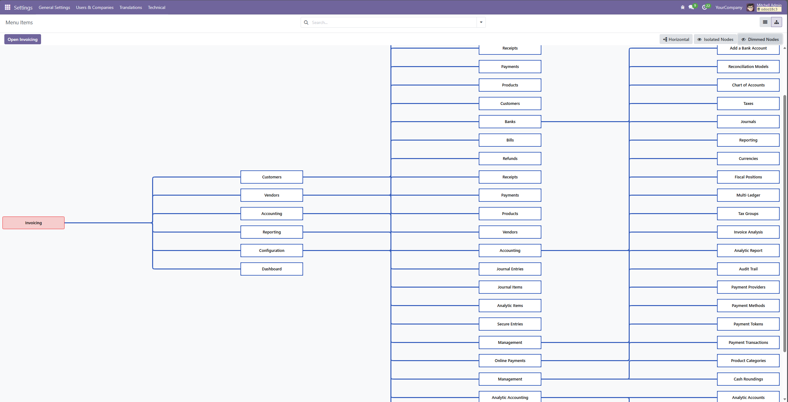
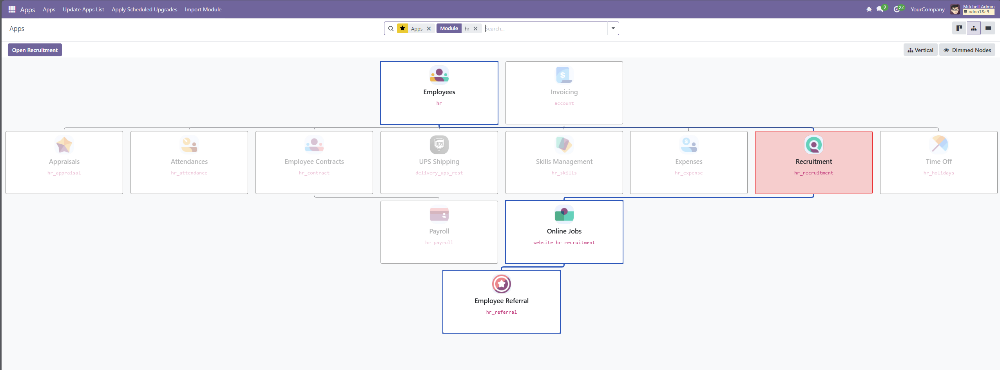

This module introduces a new Organization Chart (org) view type, allowing any hierarchical model to be displayed as an interactive tree structure. It is ideal for models that follow a parent/child pattern such as departments, categories, employees, tasks, menus, or any custom nested structure.
org

